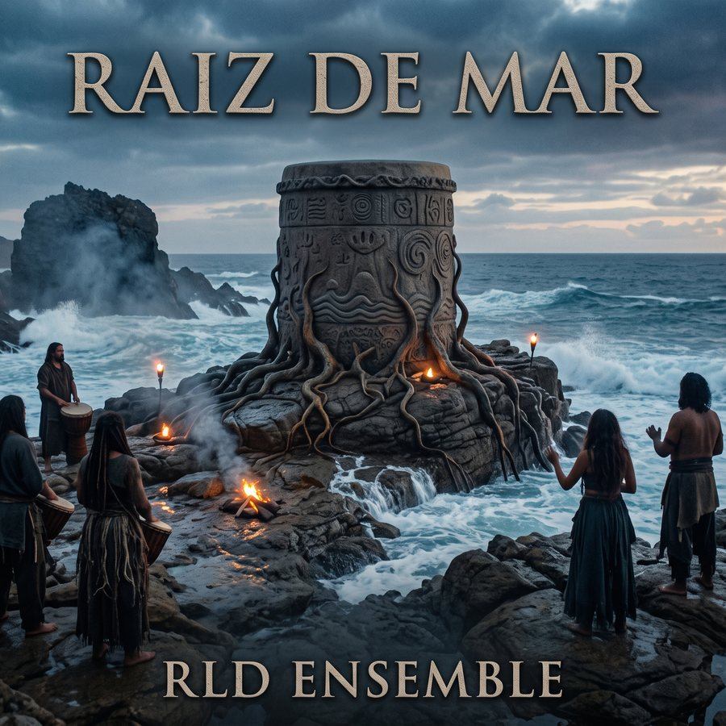

Tambor de Piedra · Álbum 01
Raíz de Mar
Rock progresivo con ritmos garífunas
Un álbum conceptual de 11 piezas que sigue el arco del pueblo garífuna: del naufragio frente a Yurumein a la resistencia de Satuyé, el exilio de 1797, el reasentamiento en la costa hondureña y la transmisión de lo que sobrevivió.
El disco
EL TAMBOR ES QUIEN LO CUENTA
No es un himno ni una proclama. Cada canción se ancla en objetos y gestos concretos — un clavo en la palma, un machete cosido en la falda, el callo de rallar yuca, un tambor mal tocado — y no en declaraciones abstractas. La guerra de 1795 ocupa el centro del relato, pero el clímax no es la batalla: es lo que sobrevivió al naufragio y siguió pasando de mano en mano.
Una banda de rock progresivo — en la línea de Emerson, Lake & Palmer y de Luis Alberto Spinetta — se deja atravesar por la punta, la paranda y el tambor garaon. Hammond, sintetizadores, compases de 7/8 y 5/4; y debajo, el tambor que aprende, tropieza y se afirma de canción en canción.
En la isla de San Vicente, pueblos caribes y africanos llegados por el mar dan origen a los garínagu.
Joseph Chatoyer encabeza la resistencia contra los británicos y cae en combate el 14 de marzo.
Tras el confinamiento en Baliceaux, los sobrevivientes son llevados a Roatán y de ahí a la costa de Honduras.
Tracklist
LAS CANCIONES
Glosario
PALABRAS GARÍFUNAS DEL DISCO
El disco usa palabras garífunas sin traducir, como gesto de presencia y no de reconstrucción.
| Garífuna | Significado |
|---|---|
| guriara | Canoa |
| guámai | Pueblo, aldea |
| wéyu | Día, sol |
| guñoun | Noche |
| béyabu | Mar, playa |
| duna | Agua |
| gürigia | Persona, ser humano |
| wayunagu | Ancestros |
| dugu | Ceremonia a los ancestros |
| ahari | Espíritu, alma |
| garínagu | El pueblo garífuna (plural) |
| ereba | Pan de yuca |
| ruguma | Prensa tejida para exprimir la yuca |
| budare | Comal |
Escuchar en